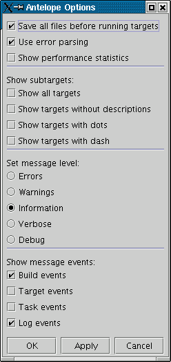
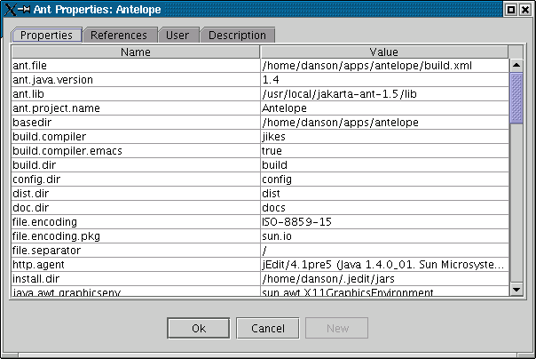
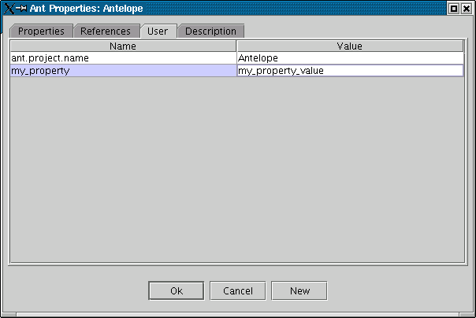
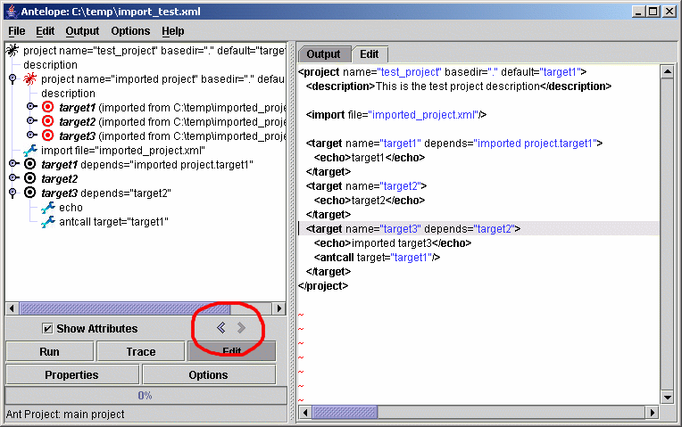
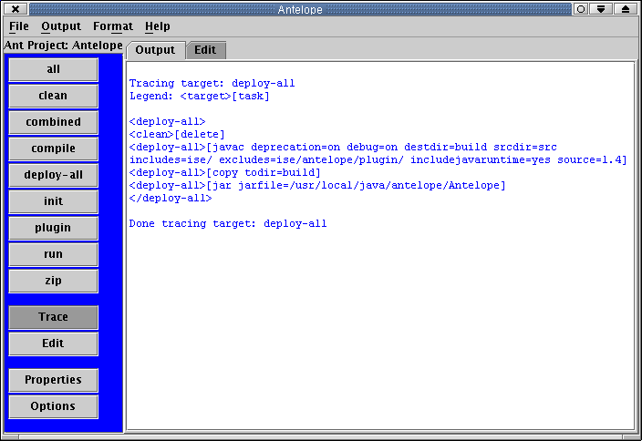
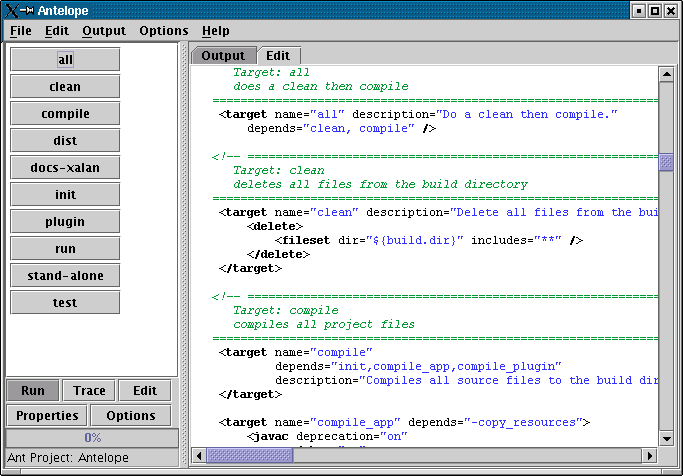
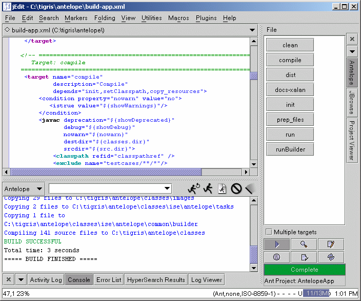

| Author: Dale Anson |
| Version: 1.98 |
"This product includes software developed by the Apache Software Foundation (http://www.apache.org/)."
Contents |
Introduction
Requirements
Support
Running Antelope
Introduction |
Antelope is a graphical user interface for running Ant. It provides a set of buttons, one per target, which makes it easy to start a specific Ant operation.
Requirements |
See the installation instructions below for the specific requirements for Antelope. Antelope does require Java 1.4 or later as it makes use of both java.util.logging and java.util.prefs APIs which were introduced in that version.
Support |
Please visit the project web pages at http://antelope.sourceforge.net for reporting bugs, user mailing lists, and other technical resources.
Running Antelope |
Antelope can be ran in two ways. Follow these links for installation and starting instructions for each mode.
(Also see the section about running Antelope's AntLogger.)
Either way, Antelope is operated almost identically. To set up Antelope, click on the "Options" button. This will display the following:

When running Antelope as a stand-alone application, the options "Save all files before running targets" and "Use error parsing" are not available. This is the only difference between the stand-alone and the plugin.
The available options are as follows:
Running Ant Targets |
Ant targets are ran by simply clicking the associated button. The button for a running target will show red text. Long running targets can be stopped by clicking any of the target buttons. If Antelope is being ran as a jEdit plugin, execution can also be stopped by clicking the "Stop" button on the Console plugin.
Displaying Ant Properties |
The "Properties" button displays the current properties and references known to Ant from the current build file and the system environment. This is handy for determining exactly what Ant thinks a specific property value is. "Properties" and "References" are for viewing only, not for editing. The "Properties" shows all properties known to the Ant project: system properties, user properties, and global properties set in the build file. The "References" tab shows all global references known to the Ant project.

The "User" tab is for setting user properties. These are properties that would be passed to Ant on the command line. These properties are persistent for the build file, so each time the build file is opened, the user properties will be restored. To enter a new property, click the "New" button to create a blank row in the table. Be sure to "enter" the name and value, that is press the 'Tab' or 'Enter' key or click out of the cell to make sure the name and/or value are stored. To remove a property, empty the corresponding value.

Editing the Build File |
Clicking the "Edit" button puts Antelope in 'edit' mode. Antelope will turn green to indicate edit mode. In this mode, the target buttons don't execute Ant targets, instead, they cause the edit area to scroll to the start of the target. To turn off 'edit' mode, click the "Edit" button again.
As a jEdit plugin, clicking the "Edit" button will open the build file in a jEdit buffer.
As a stand-alone application, clicking the "Edit" button opens the "Edit" tab to edit the build file.
When the file is saved (either by saving the buffer in jEdit or by using the File - Save Build File menu item in stand-alone mode), Antelope will immediately pick up any changes in the build file and recreate the button panel to reflect those changes.
Here is Antelope in edit mode:

Tracing Target Execution |
Antelope is put into 'tracing mode' when the "Trace" button is clicked. When in tracing mode, the background of the button panel will be blue. When in tracing mode, the target buttons do not actually execute the target. Instead, the output will show the specific order of execution of tasks performed by the target and targets that the selected target depends on. This is useful for figuring out exactly what a specific target does and the order of operations. To turn off tracing mode, click the "Trace" button a second time.
In general, targets are not parsed below task level, that is, nested task attributes are not displayed. However, two tasks are treated specially as they have a direct bearing on how a target executes. These two tasks are ant and antcall. If the trace encounters the ant task, the buildfile and target attributes will be displayed, the build file loaded, and the target traced in that build file. If the trace encounters an antcall task, the target attribute will be parsed and the target will be traced.
Here is a sample trace:
Tracing target: deploy-all
Legend: <target>[task]
<deploy-all>
<clean>[delete]
<deploy-all>[javac deprecation=on debug=on destdir=build srcdir=src includes=ise/ excludes=ise/antelope/plugin/ includejavaruntime=yes source=1.4]
<deploy-all>[copy todir=build]
<deploy-all>[jar jarfile=/usr/local/java/antelope/Antelope]
</deploy-all>
Done tracing target: deploy-all
And a line by line explanation:
| Tracing target: deploy-all | The trace is going to trace the deploy-all target. |
| Legend: <target>[task] | Targets shown with angle brackets, tasks with square brackets. |
| <deploy-all> | The trace is starting on the deploy-all target. |
| <clean>[delete] | The deploy-all target depends on the clean target, which performs a 'delete' task. |
| <deploy-all>[javac deprecation=on debug=on destdir=build srcdir=src includes=ise/ excludes=ise/antelope/plugin/ includejavaruntime=yes source=1.4] | The deploy-all target executes a 'javac' task. The parameters for the task are shown. |
| <deploy-all>[copy todir=build] | The deploy-all target executes a 'copy' tasks. Most likely, this tasks has nested includes and/or excludes, which are not shown in the trace. |
| <deploy-all>[jar jarfile=/usr/local/java/antelope/Antelope] | The deploy-all target executes the 'jar' task. |
| </deploy-all> | The trace has reached the end of the deploy-all target. |
| Done tracing target: deploy-all | Obviously, the trace is done. |
So the 'deploy_all' target first causes the 'clean' target to execute a 'delete' task, then causes the 'compile' target to execute a 'javac' task, and finally causes the 'deploy' target to create a jar file.

Antelope as a Stand-Alone Application |
Antelope is packaged as a single jar file, Antelope.jar. Several other jar files may be necessary:
The manifest file for Antelope.jar specifies kappaylayout.jar and ant.jar on the classpath, so all that should be necessary to start Antelope is:
java -jar Antelope.jar
If using the optional.jar and/or tools.jar:
java -cp optional.jar:tools.jar -jar Antelope.jar
Here is Antelope running as a stand-alone application:

Antelope as a stand-alone application provides a few features not found in the plugin version. In the plugin version, these features are provided by jEdit, so are not duplicated. The additional features are:
Antelope as a jEdit Plugin |
Antelope is packaged as a single jar file, Antelope.jar. To install Antelope, copy Antelope.jar to ${user.home}/.jedit/jars. Several other jar files are required:
Here is Antelope running in jEdit:

AntLogger |
ant -logger ise.antelope.AntLogger [other standard Ant options]
Properties
Properties can be set either on the command line or in the build file. All are optional. These properties are read and set at the start of each call to buildStarted
| Property | Description | Default |
| antlogger.echo | If set to true, output from this logger will be echoed to the original System.out and System.err print streams. | false |
| antlogger.namespace | The namespace for the logger. See the java.util.logging.Logger API documentation for a discussion of logger namespaces. This should be a dot separated name and should normally be based on the package name or class name of the subsystem, such as org.apache.tools.ant. | ise.antelope.Antelope |
| antlogger.file | If used, will add a java.util.logging.FileHandler to the current logger. See the java.util.logging.FileHandler API for a discussion of the value pattern. Basically, this is the name of a file, but other things can be done. | none |
| antlogger.file.append | If set to true and antlogger.file is being used, then output will be appended to an existing file. If false, any existing file will be overwritten. | false |
Examples:
<property name="antlogger.echo" value="true"/>
- or -
ant -logger ise.antelope.AntLogger -Dantlogger.echo=true [other options]
<property name="antlogger.namespace" value="com.mycompany.package"/>
- or -
ant -logger ise.antelope.AntLogger -Dantlogger.namespace=com.mycompany.package [other options]
<property name="antlogger.file" value="/tmp/output.log"/>
<property name="antlogger.file.append" value="true"/>
- or -
ant -logger ise.antelope.AntLogger -Dantlogger.file=/tmp/output.log -Dantlogger.file.append=true [other options]
Output
Messages for certain build events are sent at a particular log Level. See java.util.logging.Level for a discussion of the various levels. AntLogger associates build events with log Levels as follows:
| Level.ERROR | Build failed |
| Level.WARNING | Build succeeded |
| Level.CONFIG | Build started, task started/ended, target started/ended |
| Level.INFO | All other messages |